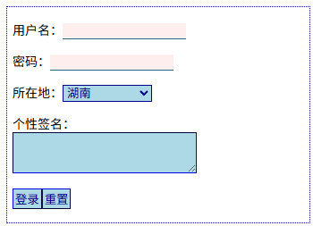
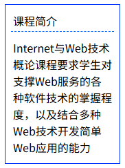
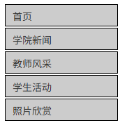
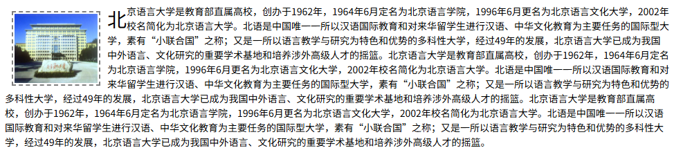
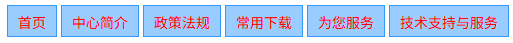
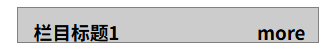
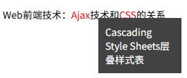
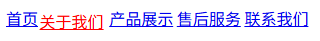

使用CSS进行网页布局，盒子模型是基础，其含义是将HTML元素看作盒子，这样一来，布局网页元素就是在摆盒子。通过设置盒子属性，可以美化网页元素，示例1  
默认情况下，行内元素从左至右摆盒子，块级元素从上至下摆盒子，这就是“流布局”。一般来说，根据标记名称可知HTML元素默认情况下是行内元素、还是块级元素；不过，使用display样式，可以将行内元素设置为块级元素，垂直导航栏 
可以将某个元素进行浮动布局设置。被浮动的元素脱离流布局位置，向左或向右浮动，未被浮动的元素在空白位置进行流布局，并且尽量不留白，图文混排及首字下沉   
使用定位布局，可以将盒子摆在指定的位置。一定要注意相对定位和绝对定位的原点是不同的，相对定位是相对于该元素在流布局中的位置进行再次定位（例如：鼠标移至菜单项时，菜单项微移动  